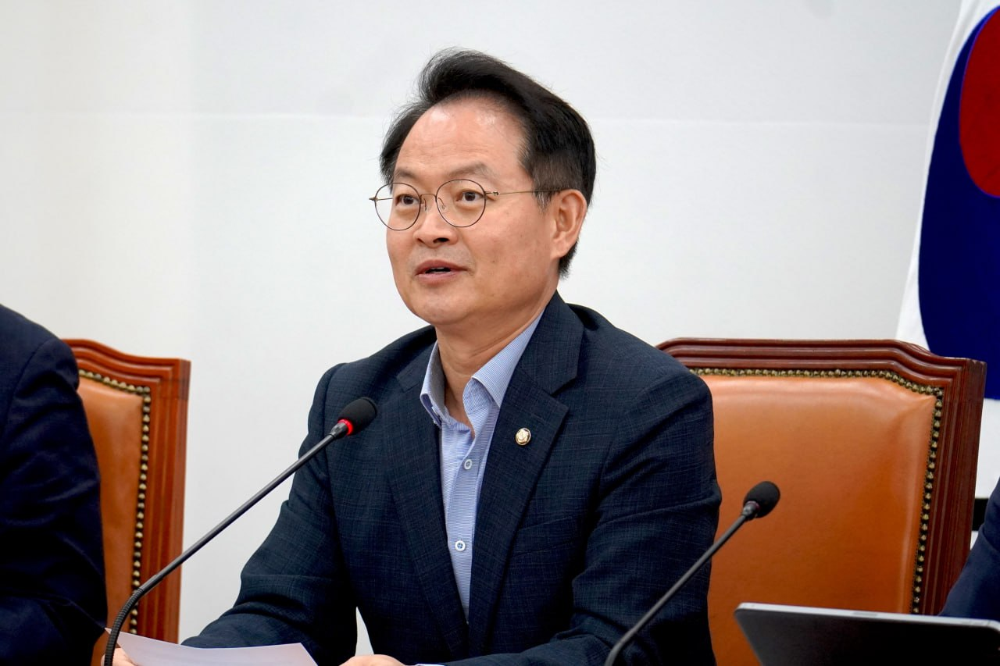

2026 국정감사 · 국토교통위원회
허영 의원
2026 국정감사 질의
10.7–10.23·국토교통부와 산하기관

질의 목록
카드를 누르면 질의 패널을 크게 보고 관련 보도를 볼 수 있습니다.
수치는 국정감사 질의서와 기관 제출 자료(의원실 재가공) 기준입니다.
춘천·강원 현안
지역구와 강원도에 관련된 질의입니다.
언론 보도
| 언론사 | 기사 제목 | 관련 질의 |
|---|
10.7–10.23·국토교통부와 산하기관

카드를 누르면 질의 패널을 크게 보고 관련 보도를 볼 수 있습니다.
수치는 국정감사 질의서와 기관 제출 자료(의원실 재가공) 기준입니다.
지역구와 강원도에 관련된 질의입니다.
| 언론사 | 기사 제목 | 관련 질의 |
|---|